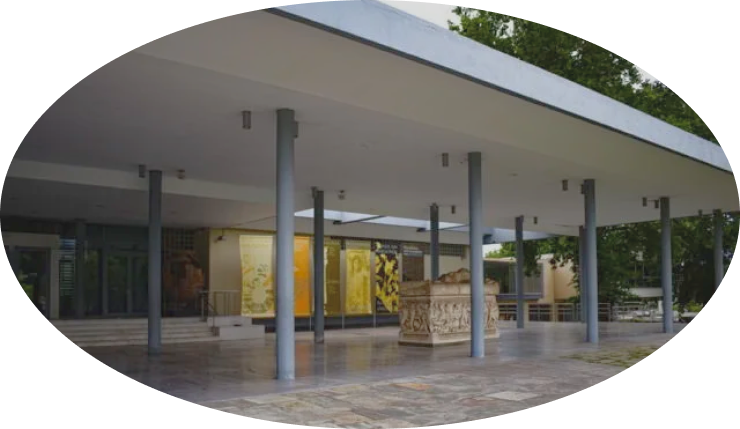

Από Ευτυχία Μαλιαρού
Η Θεσσαλονίκη διαθέτει έναν κατάλογο από μουσεία που αξίζει να επισκεφθείτε. Ενδιαφέρουσα αρχιτεκτονική και ποικίλα εκθέματα που απαντούν σε διαφορετικές εποχές θα σας μαγέψουν. Δείτε ποια είναι τα 5 καλύτερα μουσεία της πόλης και μάθετε όλες τις πληροφορίες που πρέπει να γνωρίζετε πριν την άφιξή σας σε κάθε χώρο, όπως το ωράριο, την τιμή εισιτηρίου και το πρόγραμμα λειτουργίας.
Για τους λάτρεις του Αρχαίου Ελληνικού μεγαλείου. Αποτελεί τον καλύτερο τρόπο για να γνωρίσει κανείς την Ελλάδα. Διατηρεί μια πλούσια συλλογή κειμηλίων, μοναδικά γλυπτά, ειδώλια, εντυπωσιακά ψηφιδωτά, καθώς και τη μεγαλύτερη συλλογή χρυσών στεφανιών. Μην παραλείψετε να επισκεφθείτε την υπαίθρια έκθεση – περιήγηση στην αρχαία πόλη, όπου μεταξύ άλλων, θα συναντήσετε επιτύμβιες στήλες και επιβλητικές σαρκοφάγους με περίτεχνη λάξευση.
Όλα όσα πρέπει να γνωρίζετε πριν την προσέλευσή σας στο μουσείο.
Ώρες Λειτουργίας
Τιμή εισιτηρίου:
Διεύθυνση: Μανόλη Ανδρόνικου 6, 546 21 Θεσσαλονίκη Τηλ: 2313 310301
• Στάσεις: «Λευκός Πύργος», «Δημαρχιακό Μέγαρο», «Στρατηγείο – Μουσείο Βυζαντινού Πολιτισμού», «Χ.Α.Ν.Θ.», «Μουσεία». • Γραμμές: 10, 12, 7, 31, 11, 58
• Κεντρικό Παρκινγκ ΧΑΝΘ Διεύθυνση: Τσάμικη 138 – Ν. Γερμανού 1, 546 21, Θεσσαλονίκη • Helexpo Parking (διαθέτει εξωτερικό και εσωτερικό παρκινγκ) Διεύθυνση: Εγνατία 154, 546 36, Θεσσαλονίκη
Το πιο σημαντικό τεχνολογικό μουσείο στην Ελλάδα. Ξεκινήστε το ταξίδι στο άγνωστο μέσα από το «ψηφιακό πλανητάριο» μια αίθουσα με εντυπωσιακή ημισφαιρική οθόνη 18 μέτρων όπου προβάλλονται ντοκιμαντέρ σχετικά με αστρονομικά και φυσικά φαινόμενα. Το «κοσμοθέατρο» είναι μία εξίσου καλή επιλογή αφού σε έναν μεγάλο χώρο μπορείτε να παρακολουθήσετε ταινίες επιμορφωτικού περιεχομένου σχετικά με την επιστήμη και το περιβάλλον: δεινόσαυροι, κατακόμβες και βροχές από μετεωρίτες θα σας καταπλήξουν. Σε όποιον αρέσει η περιπέτεια του δίνεται η δυνατότητα να επισκεφθεί τον «Προσομοιωτή Εικονικής Πραγματικότητας», εκεί μπορεί να μεταφερθεί σε γη, θάλασσα και ουρανό. Μην παραλείψετε να εξερευνήσετε το «Μουσείο Τεχνολογίας», έναν συναρπαστικό χώρο όπου η εκπαίδευση γίνεται παιχνίδι, παρουσιάζονται εκθέσεις που αφορούν την ιστορία της τεχνολογίας και των επιστημών και περιλαμβάνει:
Στις εγκαταστάσεις βρίσκεται και ένα εξαιρετικό εστιατόριο, που συχνά διατίθεται για δεξιώσεις, με νόστιμα πιάτα και πανέμορφη θέα – ιδανική πρόταση για να ολοκληρώσετε μια όμορφη μέρα.
Ώρες λειτουργίας:
Τιμή εισιτηρίου:
Το πρόγραμμα υπόκειται συχνά σε αλλαγές, για αυτό συνίσταται η τηλεφωνική επικοινωνία πριν την επίσκεψή στον χώρο.
Τηλ: 2310 483000
Διεύθυνση: 6o χλμ. Θεσσαλονίκης – Θέρμης, ΤΚ 57001
Ο λευκός πύργος είναι το σήμα κατατεθέν της Θεσσαλονίκης. Κατάλοιπο Οθωμανικής οχύρωσης στέκει αγέρωχος μπροστά στον Θερμαϊκό για περισσότερο από πέντε αιώνες. Η έκθεση στο εσωτερικό του, διηγείται συνοπτικά την ιστορία της Θεσσαλονίκης, με κάθε έναν από τους 5ου ορόφους να φιλοξενεί ξεχωριστή θεματική. Ο 6ος και τελευταίος όροφος έχει ιδιαίτερο ενδιαφέρον, καθώς το θέμα αφορά τις γεύσεις της πόλης. Ο χώρος παραπέμπει σε κλασικό παραδοσιακό ταβερνάκι και πάνω στα τραπέζια υπάρχουν οθόνες με βίντεο όπου προβάλλονται διάφορες παρασκευές. Μια προσπάθεια που υπογραμμίζει με έξυπνο τρόπο την πληθώρα ανθρώπων με διαφορετική κουλτούρα και προέλευση που έζησαν στην πόλη. Αφού έχετε φτάσει στην κορυφή ο εξώστης θα δικαιώσει πλήρως την επίσκεψή σας, μια θέα απαράμιλλής ομορφιάς ξεδιπλώνεται μπροστά σας. Εκεί θα συναντήσετε πινακίδες που δίνουν πληροφορίες για μνημεία του παρελθόντος τα οποία βρίσκονται σε διάφορα σημεία της Θεσσαλονίκης ορατά με γυμνό μάτι.
Από 18/04/2020 έως 15/11/2020 οι Ώρες λειτουργίας είναι:
Τιμή εισιτηρίου:
Τηλ.:2310 267832
Διεύθυνση: Θεσσαλονίκη 546 21 Άτομα με κινητικά προβλήματα μπορούν να ξεναγηθούν εικονικά στους πληροφοριακούς σταθμούς του ισογείου.
• Στάση: «Λευκός Πύργος», • Γραμμές: 39, 3Κ, 6, 5, 33
Parking White Tower – Δελήπαλτας Δ. Διεύθυνση: Δημ. Γούναρη 4-6
Τηλ.:2310 267832
Ένας ναός για τους λάτρεις της σύγχρονής τέχνης αλλά και για αυτούς που επιδιώκουν μια πρώτη επαφή με το αντικείμενο. Αυτό το εντυπωσιακό και μοντέρνο κτίριο στεγάζει μία πλούσια συλλογή έργων, κατά κύριο λόγο, καλλιτεχνών του 19ου και 20ου αιώνα. Ταυτόχρονα ένα ευρύ φάσμα από γλυπτά και ζωγραφικούς πίνακες, κομμάτια των ποικίλων περιοδικών εκθέσεων που διοργανώνονται, μεταβάλλεται συχνά. Ακόμα διαθέτει κατάλογο με δράσεις και ποικίλα εκπαιδευτικά προγράμματα που ως πρωταρχικό στόχο έχουν την ουσιαστική επαφή των παιδιών με το έργο τέχνης. Στον πρώτο όροφο, φιλοξενείται το καφέ – εστιατόριο, με στοιχεία κλασικής και μοντέρνας διακόσμησης και ενδιαφέρουσες γεύσεις. Τους καλοκαιρινούς μήνες αναζητείστε to cocktail – bar «ΑνφανΓκατέ in Guadeloupe», προσδίδει μια εξωτική νότα στις ζεστές βραδιές του μουσείου, ταξιδέψτε σε μια άλλη ήπειρο μέσω της ρυθμικής μουσικής και των εξεζητημένων πιάτων, μια εμπειρία που δεν πρέπει να χάσετε.
Ώρες λειτουργίας:
Τιμή εισιτηρίου: Γενική Είσοδος: 5€ (μειωμένο 2,5€)
Διεύθυνση: Αγίου Δημητρίου 159 Α, Θεσσαλονίκη
Τηλ.:2310267832 2310991610
• Στάση: «Τελλόγλειο», «Πλατεία Παύλου Μελά», «Σιντριβάνι» • Γραμμή: 01Χ, 15, 45, 7, 83Β
Vikas Parking Διεύθυνση: Δημ. Γούναρη 62, Θεσσαλονίκη 546 35
Τηλ.:2310218719
Χτίστηκε το 1900-1902 στο κέντρο της πόλης. Μαχητικά αεροπλάνα, τορπίλες και ελαφρά τεθωρακισμένα οχήματα είναι τοποθετημένα στον προαύλιο χώρο. Στους χώρους του μουσείου με έμφαση παρουσιάζεται ο Μακεδονικός αγώνας, η επανάσταση του 1821, ο 1 ΠΠ, ο Ελληνο-Ιταλικός πόλεμος και άλλες επαναστάσεις και συγκρούσεις στις οποίες είχε εμπλακεί η χώρα μας κατά τον 19ο και 20ο αιώνα. Στο ισόγειο πραγματοποιούνται οι περιοδικές εκθέσεις και στεγάζεται η πλούσια βιβλιοθήκη. Στον πρώτο όροφο θα συναντήσετε τη μόνιμη συλλογή που αποτελείται από όπλα, στολές και άλλα είδη του Ελληνικού στρατού, όπως και μια σειρά έργων τέχνης που εξυμνεί την ανδρεία των πολεμιστών μας και απαθανατίζει τις φορτισμένες εκείνες στιγμές.
Αν είστε λάτρεις της ιστορίας μη παραλείψετε να επισκεφθείτε το Μουσείο Βυζαντινού Πολιτισμού που απέχει μόλις μερικά βήματα με προσανατολισμό την Νέα Παραλία.
Ώρες λειτουργίας:
Τιμή εισιτηρίου: Δωρεάν είσοδος Διεύθυνση: Γρηγορίου Λαμπράκη 4
Τηλ.:2310249803-05
Παρκινγκ Δημαρχείου Θεσσαλονίκης Διεύθυνση: Λεωφ. Βασιλέως Γεωργίου 1
• Στάση: «Στρατηγείο – Μουσείο Βυζαντινού Πολιτισμού» • Γραμμή: 7, 10, 11, 12, 31, 58
Αυτά ήταν μερικά από τα πιο αγαπητά μουσεία της Θεσσαλονίκης. Μη ξεχνάτε πως κατά το διάστημα της 1 Νοεμβρίου έως 31 Μαρτίου, την πρώτη Κυριακή κάθε μήνα όλα τα Μουσεία είναι δωρεάν. Η Κυριακή – μέρα ανάπαυσης – είναι ιδανική για μια ευχάριστη και επιμορφωτική επίσκεψη σε χώρους πολιτισμού, πόσο μάλλον εάν τα έξοδά είναι μηδαμινά.
Tip 1
Εάν είστε φοιτητής δικαιούστε δωρεάν πρόσβαση στα περισσότερα μουσεία της χώρας με την επίδειξη της ακαδημαϊκής σας ταυτότητας. Εκμεταλλευτείτε το!
Φροντίστε να μην αφαιρείτε το πάσο από το πορτοφόλι, ανά πάσα στιγμή μπορεί να φανεί χρήσιμο
Tip 2
Εφαρμογές όπως το «Moovit» ή το «Beat» δεν πρέπει να λείπουν από το κινητό κανενός ταξιδιώτη!
Η πρώτη σας βοηθάει να βρείτε την πιο γρήγορη διαδρομή για τον προορισμό σας, ενώ με τη δεύτερη έχετε τη δυνατότητα να καλέσετε στο σημείο που βρίσκεστε ένα ταξί. Ταυτόχρονα βλέπετε την ώρα που χρειάζεται για να σας προσεγγίσει καθώς και ποιο θα είναι το αντίτιμο της μετακίνησης που επιθυμείτε.
Πολύ ενδιαφέρουσα προσέγγιση! Περνάω κάθε μέρα μπροστά από αυτό το κτίριο και δεν είχα ιδέα τι κρύβεται από πίσω.
ΔΗΜΗΤΡΗΣ
Το αγαπώ, δε θέλω να σταματήσω να το κοιτάζω! Επιτέλους κάτι όμορφο, βαρεθήκαμε να βλέπουμε κουτιά με εσοχές!
ΕΛΠΙΔΑ

Post Views: 258
ΑφΗστε Ενα ΣχΟλιο
Η ηλ. διεύθυνση σας δεν δημοσιεύεται. Τα υποχρεωτικά πεδία σημειώνονται με *